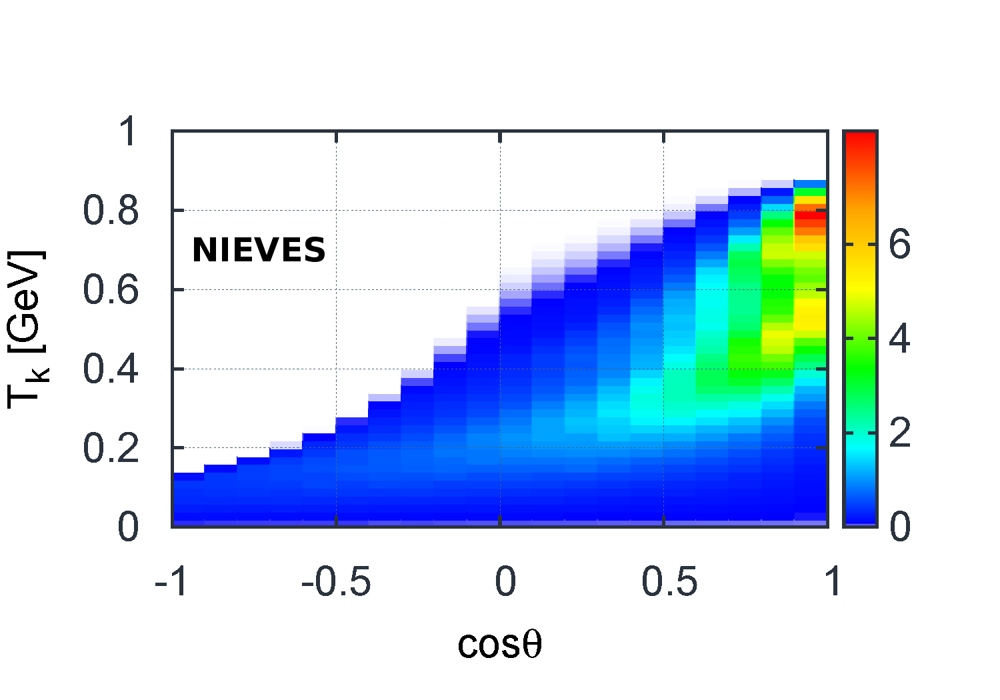
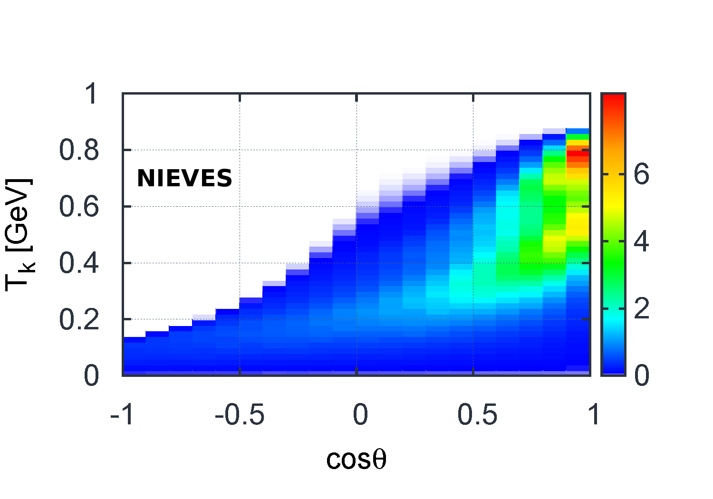

NuWro Update
Tomasz Golan
On behalf of Generator Group
MINERvA Week June 2016
Recent developments
Berger-Sehgal for coherent pion production
Effective momentum and density dependent potential
Non-resonant background scaling
Reweighting tools
Hadronic states for 2p2h
eWro
Berger-Sehgal

- some old NuWro samples were made with RS model, but now BS is default and will be used if not specified in a request
Effective potential
Binding energy depends on both nucleons momentum and location.

initial momentum random from Fermi sphere (assuming local Fermi gas)
outgoing momentum random in CMS; Pauli blocking included (in LAB)
in current implementation final nucleon is not affected by FSI
final momentum adjusted according to: \(E \rightarrow E + V\) (or nucleus in excited state if nucleon unable to leave)
Non-resonant background
Transition region in NuWro: 
There is a new parameter in params.txt: bkgrscaling
Control non-resonant background contribution to SPP
NuWro reweighting
- Reweighting tools developed by Luke Pickering (Imperial College London) and Patrick Stowell (University of Sheffield)
Nuwro_MaCCQE Nuwro_BBBA07
Nuwro_NormQEL Nuwro_NormRES
Nuwro_NormDIS Nuwro_NormCOH
Nuwro_NormMEC Nuwro_NormDYN
Nuwro_MaRES Nuwro_Ca5
Nuwro_Ma_NCEL Nuwro_Ma_NCEL_s
Nuwro_DeltaSAll reweighting plots courtesy of Luke and Patrick

RES/DIS reweighting


FSI reweighting
- Luke and Patrick also started to work on FSI reweighting
Start by doing what's necessary; then do what's possible; and suddenly you are doing the impossible.
Francis of Assisi
2p2h contribution
Two sources of 2p2h final states:
spectral function in (one body) QE dynamics
two-body current interactions
Transverse Enhancement Model (TEM) by A. Bodek et al.
Nieves et al. model


Two-body current
Only lepton kinematics

 

2p2h: open questions
interaction point (see plot)
isospin (pn more likely)
initial momenta
final momenta
(blue \(\rightarrow r^2\rho\), red \(\rightarrow r^2\rho^2\))
2p2h: initial momenta
two nucleons in back-to-back configuration
momentum distribution includes large momentum tail (taken from SF)
CM motion (gaussian distribution)
or no CM motion and mec_back_to_back_smearing
2p2h: final momenta
uniform in CMS
or prefer some direction respect to \(\vec q\)

CC no pion events

eWro
electron-nucleus interactions to test nuclear models in NuWro
not really straightforward as total electron cross section is \(\infty\)...